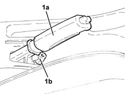
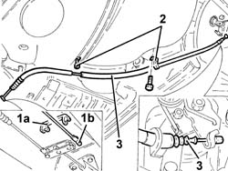

3380A30 handbrake cable - r+r
- Path
- Procedures > 33 BRAKING SYSTEM > 3380 HANDBRAKE > 3380A handbrake control and linkage > 3380A30 handbrake cable - r+r
- Kind
- repair procedure (removal / refitting; the operation number is the code)
- Applies to
- all engines; all production periods
- Interactive page
- https://sloeber94.github.io/elrnDB-a147/en/#/3025275
Applies to: all engines; all production periods
 Removing
Removing
 Refitting
RefittingPosition the vehicle on the ramp.
Proceed with the removal 4450B11 WHEEL (one) rear - R.R. .
Remove the handbrake boot.
1. Lift up the handbrake lever (1a) and loosen the nut (1b) tensioning the handbrake cables.

Applies to: all engines; all production periods
1. Remove the retainer (1a) and disconnect the handbrake cable (1b).
2. Release the handbrake cable from the intermediate attachments.
3. Disconnect the handbrake cable from the rear brake caliper and remove it completely from the protective sheath.

Applies to: all engines; all production periods
Refitting
RemovingRefit the handbrake cable complete with protective sheath back in its seating and connect it to the rear brake caliper.
Secure the handbrake cable from the intermediate attachments.
Connect the handbrake cable to the rod connected to the handbrake lever and secure it using the retainer.
Adjust the travel of the handbrake lever 3380A04 handbrake - check travel .
Place the handbrake boot back in its housing.
Proceed with the refitting 4450B11 WHEEL (one) rear - R.R. .
Remove the car from the ramp.